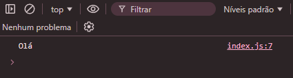
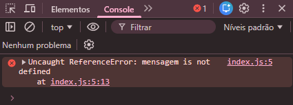
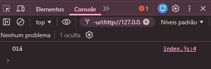
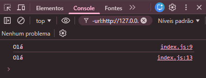
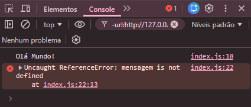
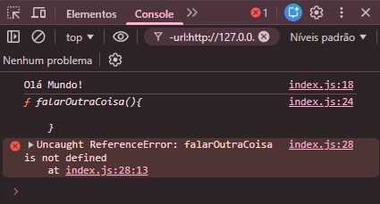
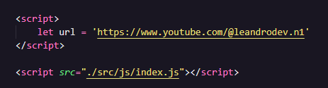
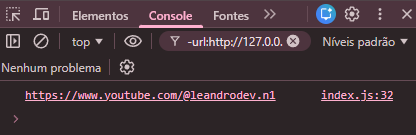
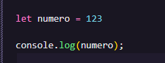

Quando criamos uma variável podemos acessar ela sempre que quisermos, mas ela fica limitada ao escopo onde foi criada. Exemplo: se escrevermos o código
const mensagem = 'Olá'
console.log(mensagem);

Fazendo isso o console imprime corretamente, mas se fizer dentro de um 'if':
if(true){
const mensagem = 'Olá'
}
console.log(mensagem);

Aqui o console da erro, porque o bloco de código 'if' cria um escopo para a variável mensagem e por isso essa variável só pode ser acessada dentro desse bloco. Assim:
if(true){
const mensagem = 'Olá'
console.log(mensagem)
}

Blocos de códigos, criam um escopo para variáveis criadas com const e let. O que vimos antes. 👆
Blocos de códigos autonômos, para criar precisamos apenas começar abrindo e fechando as chaves '{}', feito isso tudo que for posto ali dentro serão os blocos de códigos autonômos. Este não cria um escopo para a variável 'var', se fizer isso o console imprime mesmo assim.
{
var mensagem = 'Olá'
console.log(mensagem);
}
console.log(mensagem);

Escopo de Função, define um escopo para as variáveis const, let e var. Usando o código:
function falar(){
var mensagem = 'Olá Mundo!'
console.log(mensagem);
}
falar()
console.log(mensagem)

Veja que usando a 'function' o console imprime apenas o que está dentro do escopo dele, o que é chamado fora da erro. Isso aocntece tanto para o var, let e const. Inclusive uma function fica presa dentro dela mesma, vejamos:
function falar(){
const mensagem = 'Olá Mundo!'
console.log(mensagem)
function falarOutraCoisa(){
}
falarOutraCoisa()
console.log(falarOutraCoisa)
}
falar()
console.log(falarOutraCoisa);

Escopo Global: é o escopo mais externo de todos e ele vai acessível de qualquer outro escopo, tanto o local quanto o de função e etc.
Essa variével é posta logo acima do script do js em nosso index.html, se colocar em baixo do JS vai da erro.


Dessa forma quando chamamos a variável no JS usando o console, vai ser impresso: "console.log(url);"
Uma variável global pode ser posta tanto no script no index.html tanto no JS, é só colocar a variável fora de tudo.
